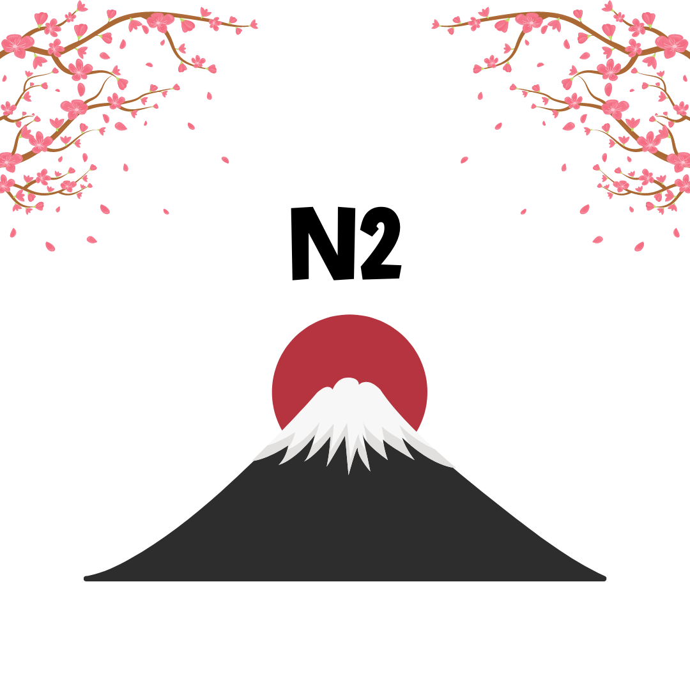

CHỌN ĐI CHỜ CHI
Để lấy được chứng chỉ tiếng Nhật bạn phải tham gia kỳ thi kiểm tra, đánh giá trình độ, năng lực sử dụng tiếng Nhật (Japanese Language Proficiency Test - JLPT) do Hiệp hội hỗ trợ quốc tế Nhật Bản và Quỹ giao lưu quốc tế Nhật Bản tổ chức.JLPT được tổ chức 02 kỳ trong một năm, vào chủ nhật đầu tiên của tháng 7 và chủ nhật đầu tiên của tháng 12.
-
Trình độ N5
Đây là trình độ sơ cấp 1, sẽ bắt đầu học từ bảng chữ cái Hiragana, Katakana và học những chữ hán đơn giản.
-
Trình độ N4
Đây là trình độ sơ cấp 2, học hết 50 bài trong giáo trình Minnanonihongo sẽ là trình độ N4. Lúc này các bạn đã nắm được khoảng 2.000 từ vựng, các mẫu câu cơ bản và có thể giao tiếp cơ bản được với người Nhật trong tình huống hàng ngày.
-
Trình độ N3
Đây là trình độ trung cấp 1 dùng được trong giao tiếp hàng ngày và trong công việc. Có thể đọc hiểu văn chương, báo chí về các vấn đề cụ thể, giao tiếp tự nhiên trong cuộc sống và công việc hàng ngày.
-

Trình độ N2
Trình độ N2 thường được dùng trong văn viết và trong các bài phát biểu trang trọng. Có thể đọc đoạn văn có chủ đề rõ ràng, hiểu nội dung các bài báo, tạp chí... về các chủ đề đa dạng và giao tiếp tốt trong các tình huống thường ngày.
-
Luyện tập
Bài luyện tập đa dạng: Từ vựng, Bài đọc, Bài nghe,...